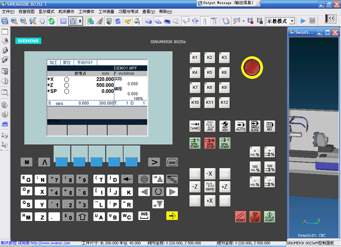
软菜单键.
加工显示.
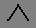
返回键.
菜单扩展键
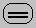
区域转换键
光标向上键.
上档:向上翻页键.
光标向左键.
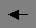
删除键(退格键)
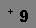
数字键
上挡键转换对应字符
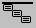
垂直菜单键.
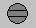
报警应答键.
选择/转换键
回车/输入键
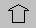
上档键.
光标向下键.
上档:向下翻页键
光标向右键.
空格键(插入键)
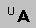
字母键
上档键转换对应字符
| 开机 |
操作步骤 接通CNC和机床电源系统启动以后进入“加工”操作区JOG运行方式，出现“回参考点窗口”。 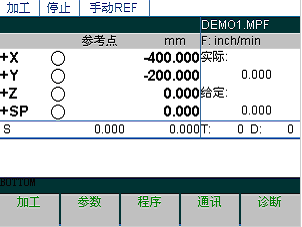 |
| 回参考点 (“加工”操作区) |
操作步骤 “回参考点”只有在“JOG”方式下可以进行。 用机床控制面板上“回参考点键”启动“回参考点” 在“回参考点”窗口中显示该坐标轴是否回参考点 坐标未回参考点。 坐标已到达参考点。 选择正方向坐标轴 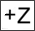 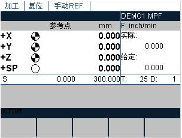 |
| “JOG”运行方式 (“加工”操作区) |
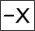 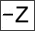 可以使坐标轴运行。如果同时按动相应的坐标轴键和“快进” 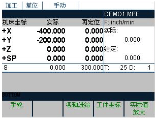
|
| MDA运行方式(手动输入) (“加工”操作区) |
功能 在MDA运行方式下可以编制一个零件程序段加以执行，但不能加工由多个程序段描述的轮廓。 操作步骤 选择机床操作面板上的MDA键。 … 通过操作面板输入程序段。 按动数控启动键 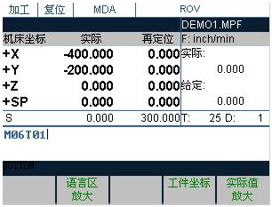 |
| 建立新刀具 |
操作步骤 依次按 按“新刀具”键,建立一个新刀具。 出现输入窗口,显示所有给定的刀具号。 输入新的T-号(1-32000)，并定义刀具体安排类型。 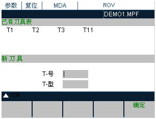
|
| 刀具补偿参数 |
刀具补偿分为刀具长度补偿/刀具半径补偿，参 数表结构因刀具类型不同而不同。 操作步骤 按下列步骤输入刀补参数: 移动光标 到要修改的区域 输入数值 按输入键确认 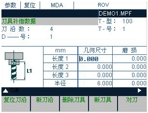 |
| 确定刀具补偿值 |
操作步骤 按“参数” “刀具补偿” “ ” “对刀”
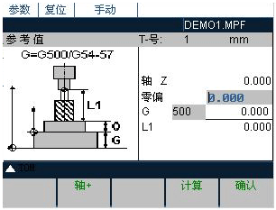 • 如果刀具不能回到零点GXX,请输入偏移值.没有零点偏置时,输入G500并输入偏移值. •按“计算”键,刀具补偿被存储 |
| 输入/修改零点偏置值 (“参数”操作区) |
功能 在回参考点之后实际值存储器以及实际值的显示均以 机床的零点为基准，而工件的加工程序则以工件零点为基准，这之间的差值就作为可设定的零点偏移量输入。 操作步骤 通过操作软键“参数”和“零点偏移” 用 键把光标移到待修改的范围 输入数值 按“向下翻页”键，屏幕上显示下一页零点偏置窗:G55和G56。 按返回键不确认零点偏置值，直接返回上一级菜单。 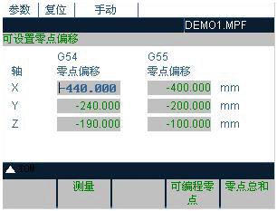 |
| 计算零点偏置值 |
前提条件 选择零点偏置(如G54)窗口 操作步骤 按“参数” “零点偏移” “ ” “测量” “确认” 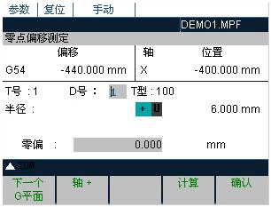 |
| 选择和启动零件程序 (“加工”操作区) |
功能 启动程序之前必须要调整好系统和机床，保证安全。 操作步骤 按自动方式键选自动运行方式 打开“程序目录窗口” 在第一次选择“程序”操作区时会自动显示“零件程序和子程序目录”。用光标键 把光标定位到所选的程序上。 用“选择”键选择待加工的程序，被选择的程序名称显示在屏幕区“程序名”下。 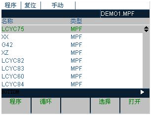 |
| 自动运行方式 |
功能 在自动方式下零件程序可以自动加工执行，这是零件加工中正常使用的方式。 操作步骤 按自动方式键选自动运行方式。 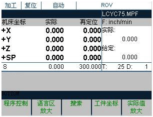 “自动方式”状态图 按程序控制键，出现下图。 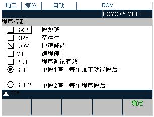 通过选择/转换键，选择控制程序的方式。 按区域转换键，回主菜单。 按程序键。 用光标键 选择要加工的程序。 按选择键,调出加工的程序。 按打开键可编辑修改程序。 按单步循环键,选择单步循环加工。 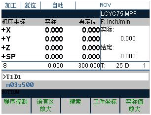 按CYCLESTART键，启动加工程序。 |
| 程序段搜索 (“加工”操作区) |
操作步骤 前提条件:程序已经选择. 按搜索键程序段搜索一直进行下去,直到找到所需的零件程序。 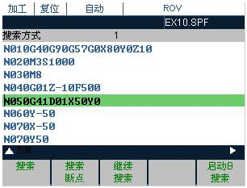 程序段搜索窗口 执行程序搜索功能,关闭搜索窗口。 搜索结果 窗口显示所搜索到的程序段。 |
| 输入新程序 (“程序”操作区) |
功能 编制新的零件程序文件,开出一窗口,输入零件名称和类型。 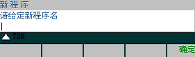 操作步骤 选择“程序”操作区,显示NC中已经存在的程序目录. 按“新程序”键,出现一对话窗口,在此输入新的主程序和子程序名称. 在名称后输入文件类型. 按“确定”键确认输入,生成新程序.现在可以对新程序进行编辑。 用关闭键 结束程序的编制,这样才能返回到程序目录管理层。 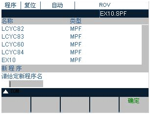 |
| 零件程序的修改 (“程序”运行方式) |
|

| 编程设定数据 (“参数”操作区) |
功能 利用数据可以设定运行状态,并在需要时进行修改. 操作步骤 通过按“参数”键和“设定数据”键选择设定数据.在按下“设定数据”键后进入下一级菜单,在此菜单中可以对系统的各个选件进行修改. 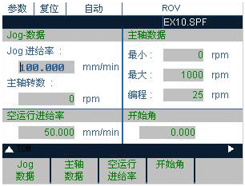 “设定数据”状态图 用光标键 把光标移到所要求的范围 在光标处输入新的值. 按输入键或者光标键. 软键 JOG数据 该功能允许对下列设定进行修改: JOG---进给率： 在JOG状态下的进给率 如果该进给率为零,则系统使用机床数据中存储的数值。 主轴：主轴转速 主轴旋转方向 主轴数据 最大值/最小值 对主轴旋转的限制只可以在机床数据所规定的范围内进行。 可编程主轴极限值 在恒定切削速度时可编程的最大速度。 空运行进给率 在自动方式中若选择空运行进给功能,则程序不按编程的进给率执行,而是执行在此输入的进给率。 开始角 螺纹切削开始角(SF) 在加工螺纹时主轴有一起始位置作为开始角,当重复进行该加工过程时,就可以通过改变此开始角切削多头螺纹。 |
| R参数 (“参数”操作区) |
功能 “R参数”窗口中列出系统中所有的R参数,需要时可以修改这些参数. 操作步骤 按软键“参数”和“R参数” 用光标键 把光标移到所要求的范围 输入数值. 按输入键或光标键进行. 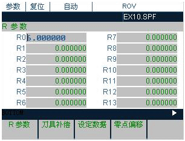 R参数窗 |